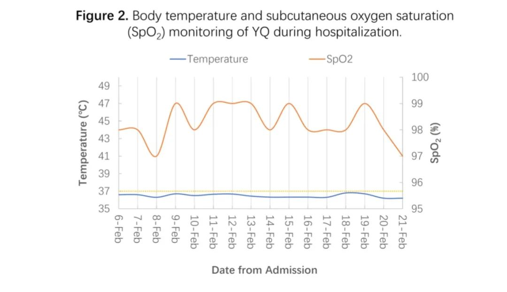

无症状感染者之谜
原文链接 备份链接 *************▲*************2020年2月21日，位于北京市丰台区杜家坎的新冠肺炎疫情防控工作集中观察点，护士正对房间走廊进行消毒。（新华社/图） 全文共5134字，阅读大约需要13分钟。 …
澎湃新闻记者 贺梨萍
新冠肺炎无症状感染者由于症状不明显或者几乎没有症状，很容易被忽视，这部分感染者也被认为是疫情防控的难点之一。
2月26日，来自中国科学技术大学附属第一院（安徽省立医院）、安徽医科大学附属安庆医院、安徽省疾控中心等团队的研究人员在中国科学院科技论文预发布平台ChinaXiv提交了一项最新研究（未经同行评审），报告了一名新冠病毒无症状感染者的发现和临床治疗细节。

该研究的通讯作者为中国科学技术大学生命科学和医学部教授翁建平、安徽医科大学附属安庆医院副院长刘建。论文中提到，据研究团队所了解，此次研究应该是新冠病毒无症状感染者的首次论文报告。
研究的这名对象为50岁女性，经核酸检测确诊为新冠病毒阳性至论文提交已20天，但截至论文提交该感染者核酸检测尚未转阴。研究团队还根据临床治疗结果认为，目前的治疗对这名感染者可能无效，反而造成轻微的肝损伤。
他们据此提出，对于无症状或症状轻微的患者，隔离和密切观察可能风险更小。
值得一提的是，中国工程院副院长、呼吸与危重症医学专家王辰在2月19日晚播出的《新闻1+1》节目中也回应了无症状感染者的问题，他表示，“对无症状感染者的判断主要是靠核酸检测，以后还会有抗原检测、抗体检测，这些检测方法是甄别无症状感染者有效的手段。”
他同时提到，新冠病毒或许也会发生一定的变化，针对它所反映出来的生物学特点，“我们随着认识加深，会对应制订一些医学上的防范和诊断治疗方法，并做出相应的安排和预防。”
密切监测是发现无症状患者的一种选择，但代价高昂
2020年2月，研究团队在安徽医科大学附属安庆医院确诊了4名家庭聚集性的新冠肺炎患者。其中，家庭成员之一（YQ，患者A）为无症状患者。目前，为保证检测质量，安徽省实行两步确认策略，市级疾控中心和省级疾控中心分别确认后，患者最终被确诊为新冠肺炎。
YQ为一名50岁女性，和她的丈夫（患者B）一起生活在安庆。夫妇二人均未到过武汉或武汉附近城市，二人也否认有过野生动物接触史。丈夫在1月23日-1月25日和他的姐姐（患者C）和姐夫（患者D）有过近距离接触。患者C和患者D也没有武汉旅行史，但是患者D在1月21日的时候曾经和患者E一起工作过。在跟患者D见面之前，患者E从武汉回到安庆，后来他被确诊为新冠肺炎。

流行病学信息
患者D在1月26日开始发烧，患者C在1月30日开始发烧。他们第一时间在安庆第二人民医院住院，并采集了咽拭子。2月5日，这两例患者被确认为新冠病毒阳性。确诊之后，他们立即被转院到安徽医科大学附属安庆医院。
作为密切接触者，YQ和患者B虽然没有包括发烧、咳嗽或呼吸方面的任何症状，他们也均在同一天接受了咽拭子检测和CT扫描。2月6日，YQ和患者B确诊为新冠肺炎阳性患者。患者B胸部CT扫描显示右肺下段呈毛玻璃样阴影（GGO），提示病毒感染，YQ胸部CT扫描未见明显异常。2月6日当天，YQ和患者B入住安徽医科大学附属安庆医院，接受治疗和观察。

YQ住院期间体温和血氧饱和度
YQ无高血压、糖尿病、慢性肝病、慢性肾病等病史。入院时生命体征正常，体温36.6℃，脉搏每分钟88次，呼吸频率每分钟20次，血压136/90mmHg，血氧饱和度（SpO2）99%。
从1月23日开始，在住院期间，YQ没有报告发烧、疲劳、疼痛或任何胃肠道和呼吸道症状，包括咳嗽、喉咙痛、腹泻或呕吐。护士和医生也没有发现她有这些症状。
研究团队在讨论环节指出，如果没有详细的流行病学询问和密切监控，很难发现YQ，甚至她丈夫也很难被发现，他除了咽拭子呈阳性和CT扫描肺有异常外，也没有其他症状。
这对夫妇在被发现之前并没有意识到感染，并将病毒传染给了其他人。因此，为防止疾病以这种方式传播，对无症状个体的密切监测将是一种选择，但代价高昂。
当然，更好的解决办法可能是开发保护性疫苗。
核酸检测持续呈阳性，目前治疗可能无效
住院之后的2月6日至2月16日期间，YQ接受了中医（TCM）、雾化干扰素α2β、洛匹那韦/利托那韦治疗。随后她中断了中医和洛匹那韦/利托那韦，改静脉注射利巴韦林。
2月16日，她的实验室检测结果基本正常。2月20日，肝酶轻度升高，但她的感觉没有任何变化，也没有观察到体征或症状的变化。治疗中加入了肝保护剂甘草酸。2月11日和2月20日还进行了胸部CT扫描，结果均为正常。
值得注意的是，2月19日，YQ的第二次咽拭子及其肛门拭子被送去检测，两份结果显示均为新冠病毒阳性。作者们提到，截至提交这篇论文，YQ还在住院治疗。
研究团队判断，按照目前的临床分析，YQ可能是一名健康无症状的病毒携带者。
此外，尽管在两周的住院治疗期间，YQ接受了中医、洛匹那韦/利托那韦和利巴韦林治疗，但她的病毒核酸持续呈阳性表明，这些治疗可能无效。
这在另一支团队的一项随机临床试验中也得到了证明。此前的2月21日，国家卫生健康委专家组成员、上海市公共卫生临床中心党委书记卢洪洲团队在《中华传染病杂志》发表了一项最新研究，他们回顾性分析了134例确诊新冠肺炎患者的临床资料后也得出，未发现洛匹那韦/利托那韦具有改善症状或缩短呼吸道标本病毒核酸转阴时间的作用，认为其有效性仍有待进一步临床研究确认。针对另一药物阿比多尔也是同样的结论。
此外，在对YQ的治疗中，治疗后观察到的肝酶升高可能是由于使用了洛吡那韦/利托那韦，肝损伤是其常见的副作用。
研究团队最后提出，对于无症状或症状轻微的患者，隔离和密切观察可能风险更小。
戳这里进入
“全国新型冠状病毒感染病例实时地图”↓↓↓
本期编辑 周玉华
推荐阅读


原文链接 备份链接 *************▲*************2020年2月21日，位于北京市丰台区杜家坎的新冠肺炎疫情防控工作集中观察点，护士正对房间走廊进行消毒。（新华社/图） 全文共5134字，阅读大约需要13分钟。 …
原文链接 备份链接 【财新网】（记者 杨睿）新冠病毒看起来远比SARS冠状病毒“狡猾”。一篇发表国际顶级医学期刊《新英格兰医学期刊》（NEJM）上的通讯文章首次报告称，德国研究人员从两名无症状感染者的咽拭子中分离出新冠病毒，表明无症状者 …
原文链接 备份链接 编者按：1月28日，HIV感染者“HIV松鼠哥”发微博称，可以向确诊的新冠病毒肺炎患者免费提供“克力芝”——一种被列入《新型冠状病毒感染的肺炎诊疗方案》的抗HIV药物，药品则主要来自国内HIV感染者的捐赠。从那天起，他 …
原文链接 备份链接 【财新网】（实习记者 何京蔚 记者 黄蕙昭）北京时间2月14日，加拿大安大略省卫生厅召开新闻发布会，通报当地新型冠状病毒肺炎疫情。发言人芭芭拉·亚菲(Babara Yaffe)表示，多伦多市确诊的两例新冠肺炎患者，临 …
原文链接 备份链接 新冠肺炎患者因何而死？死亡特征是什么？ 2 月 26 日，预印本期刊 MedRxiv 发表了来自武汉大学人民医院的论文《25 例新冠病毒肺炎死亡患者的临床分析：中国武汉单中心的回顾性研究》试图回答此问题，论文通讯作者系 …